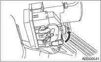
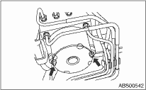

1. Disconnect the ground cable from battery.
2. Remove the air cleaner case to make it easier to remove the ABSCM&H/U.  or
or
3. Use an air gun to blow off any water around the ABSCM&H/U.
NOTE:
A contact fault may occur if the terminal is wet.
4. Lift the lock lever and disconnect the ABSCM&H/U connector.
CAUTION:
Do not pull on the harness when disconnecting the connector.

5. Remove the harness clip.
6. Disconnect the brake pipes from the ABSCM&H/U.
7. Wrap the brake pipe with a vinyl bag so as not to spill the brake fluid on the vehicle body.
CAUTION:
If brake fluid is spilled on the vehicle body, wash it off immediately with water and wipe clean.
8. Remove the nuts and remove the ABSCM&H/U.
CAUTION:
• Do not drop or bump the ABSCM&H/U.
• Do not turn the ABSCM&H/U upside down or place it sideways for storage.
• Be careful not to let foreign matter enter into ABSCM&H/U.
• Be careful that no water enters the connectors.

9. Remove the ABSCM&H/U bracket.